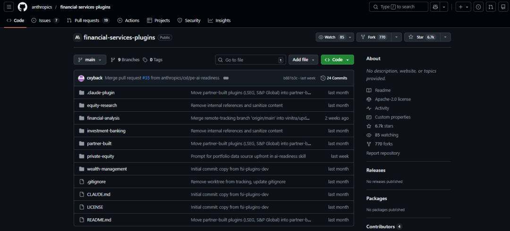
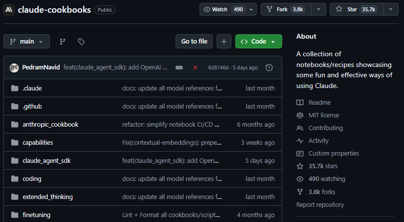
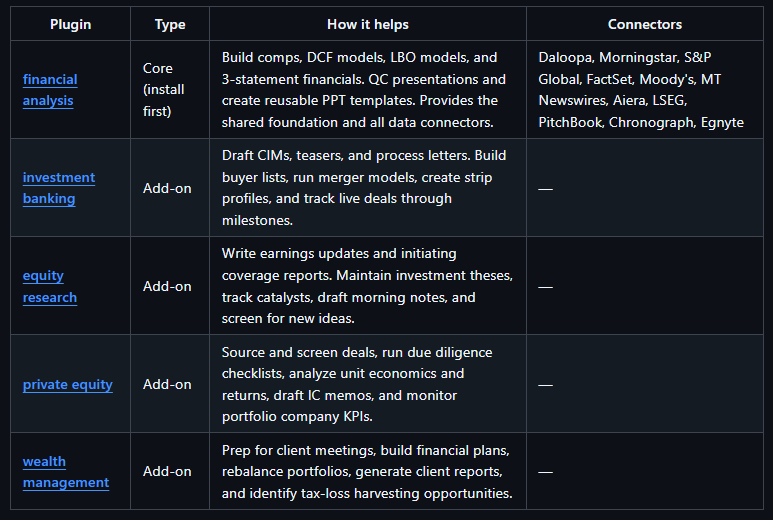
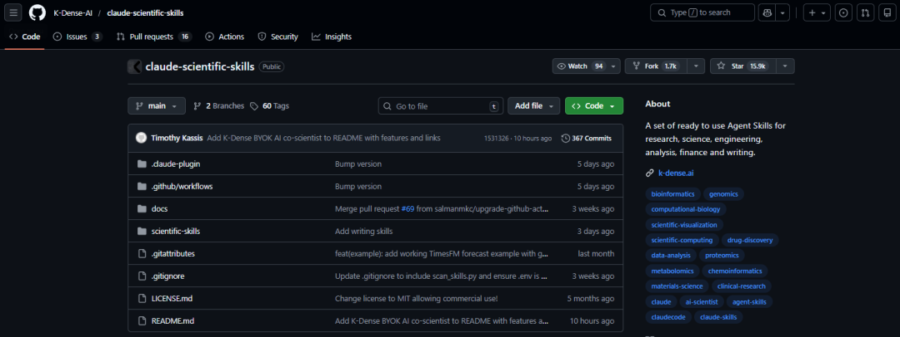

DCF 建模、蒙特卡洛模拟、权益研报、量化回测，这些过去要花数小时甚至数天的专业活儿，现在全都被压缩成了自然语言指令。
硬评测
作者 | Kozmon
编辑 | IngAI
一个分析师，30分钟，一份完整的投资建议——备忘录、财务模型、支撑文件全部到位。
在AI的加持下，这可能成为金融圈的工作日常。
过去半年，华尔街对AI的态度已经不是"试水"了——
高盛让 Anthropic 工程师驻场 6 个月搭合规系统，要实现会计与合规业务全面自动化；
挪威主权基金 CEO 说 Claude 帮他们省出了 21.3 万工时，相当于生产力提升 20%；
AIG 用AI，直接把承保时间从1个月干到了1天，承保审查周期缩短超过 5 倍，数据准确率从 75% 提到 90% 以上。
在这个背景下，我们不妨来一起看下近期大热的金融Skills项目。
DCF 建模、蒙特卡洛模拟、权益研报、量化回测，这些过去要花数小时甚至数天的专业活儿，现在全都被压缩成了自然语言指令。
我挑了最有意思的6个，咱们一个一个聊。
01
Anthropic 官方下场，直接覆盖华尔街全工种
先说两个官方项目。
第一个藏得比较深。
anthropics/claude-cookbooks 这个仓库有 3.2 万 Stars，但大部分人不知道它的深层目录里有一个专门的金融建模 Skill。

它编码了四套核心工作流：DCF 估值（支持永续增长法和退出倍数法，输出企业价值和股权价值）、敏感性分析（龙卷风图 + 多变量数据表）、蒙特卡洛模拟（跑数千次情景，算 VaR 和置信区间）、带概率权重的情景规划。模型类型覆盖企业估值、项目融资、M&A 分析和 LBO 建模。
用法：
Build a DCF model for this SaaS company using the attached financials
Run a Monte Carlo simulation on this acquisition model with 5,000 iterations
Create sensitivity analysis showing impact of growth rate and WACC on valuation
Develop three scenarios for this expansion project with probability weights生成的 Excel 工作簿自带公式、格式校验和资产负债表平衡检查——不是静态数据，是能跑的模型。配套 Jupyter Notebook 演示了怎么用 Claude 的 Excel、PowerPoint、PDF 内置 Skills 做端到端的金融文档生成。
安装：
# Clone the cookbooks repository
git clone https://github.com/anthropics/claude-cookbooks.git
# Link the financial modeling skill
ln -s ~/claude-cookbooks/skills/custom_skills/creating-financial-models ~/.claude/skills/第二个是旗舰级产品。
anthropics/financial-services-plugins（6,700 Stars），41 个 Skills、38 个 Commands、11 个 MCP 数据集成，五大插件直接对标华尔街主要工种：
◦ Financial Analysis：Comps、DCF、LBO、三表联动
◦ Investment Banking：CIM、Teaser、并购模型、交易材料
◦ Equity Research：盈利更新、覆盖报告、目标价设定
◦ Private Equity：Deal Sourcing、IC Memo、投后管理 KPI
◦ Wealth Management：组合分析、客户汇报
关键在数据层。它覆盖了 Daloopa、Morningstar、FactSet、Moody's、PitchBook 等 11 家顶级金融数据商，Claude 可以直接调用实时数据完成分析，不再依赖用户手动上传。

两个合作伙伴插件分别来自 LSEG（伦敦证券交易所集团）和 S&P Global，咨询合作伙伴包括德勤、毕马威、普华永道和 Accenture。
产品面向 Max（$100-200/月）、Teams 和 Enterprise 用户，通过 AWS Marketplace 和 Google Cloud Marketplace 分发。
传统金融终端——Bloomberg、FactSet——要求分析师掌握复杂的操作界面和查询语法。这套插件的逻辑是把同样的专业级工作流压缩为自然语言指令。
02
社区爆发力
官方之外，社区项目的爆发力同样值得关注。
K-Dense-AI/claude-scientific-skills（8,241 Stars）是目前 GitHub 上最全面的科学数据分析 Skills 集合——140 个 Skills，覆盖 28 个科学数据库和 55 个 Python 包。
虽然原为科学研究设计，但能力高度适配量化金融：pandas/NumPy/matplotlib 做数据分析与可视化，ARIMA/GARCH 做时间序列建模，scikit-learn/SciPy/statsmodels 做统计建模与假设检验，PyTorch Lightning 做预测模型。处理市场数据、Tick 数据、基本面数据，即装即用。

VoltAgent/awesome-agent-skills（6,532 Stars）更像是一个 Skill 市场。300+ Skills 的综合目录，兼容 Claude Code、Codex、Gemini CLI、Cursor 等多平台。
其中有一个专门的量化分析师 Agent，覆盖策略开发、VaR/CVaR/最大回撤等风险分析、蒙特卡洛验证和 Walk-forward 优化。但它更大的价值是发现——按类别浏览，带 Star 数、更新日期、许可证信息，帮你找到你不知道存在的 Skill。
jeremylongshore/claude-code-plugins-plus-skills（1,312 Stars）是个大型集合，1,537 个 Skills 横跨 DevOps、安全、ML、数据和 API。
金融相关的亮点在算法交易模块：支持均值回归、动量、突破、套利等策略类型，内置 RSI、MACD、布林带等技术指标库，提供完整回测基础设施——仓位管理、Sharpe ratio/最大回撤/胜率计算、滑点与佣金建模、策略稳健性统计验证。对做系统化交易的人来说，这是从策略开发到绩效归因的一条龙。
最后一个项目 Star 数不高，但故事有意思。
quant-sentiment-ai/claude-equity-research（335 Stars）是独立开发者 Daniel An 一个人做的。
这个插件能生成对标高盛格式的机构级权益研究报告：买入/卖出建议、12 个月目标价、牛/基准/熊三种估值情景，功能模块覆盖基本面分析、催化剂分析、估值建模、风险评估、技术指标、期权资金流分析、内部人交易监控、行业定位和 ESG 评估。
03
必须提及的风险
在把skills应用到实践之前，有件事值得注意。
不少安全机构研究发现，大量的 Skills 包含严重安全缺陷，部分甚至会主动窃取凭证。它们的"SKILL.md to Shell Access"研究更直接——仅三行 Markdown 就能让攻击者获得你机器的 Shell 权限。
在金融场景下，这个风险被放大：专有交易算法、非公开市场数据、客户组合信息、券商 API 密钥，都是潜在泄露目标。
建议：安装前让AI通读 SKILL.md 和捆绑脚本，检查 allowed-tools 权限字段，优先选来源可靠的项目，为涉及敏感数据的工作使用独立的工作环境。
04
结语
这批 Skills 的核心价值不是替代金融判断——毕竟，真正的专业知识现在还不可替代。
但写重复的代码、调 Excel 公式、调试回测循环里的错误等等消耗心智带宽的重复劳动，现在确实可以交出去了。
硬评测